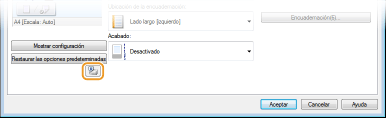
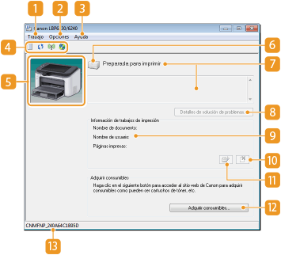

0KXF-00H
La Ventana Estado de la impresora es una utilidad que le permite comprobar el estado del equipo, ver información sobre los errores y configurar el equipo, por ejemplo, las opciones de ahorro de energía. También puede utilizarla para operaciones como cancelar un trabajo de impresión o imprimir una lista de las opciones de configuración del equipo. La utilidad de la Ventana Estado de la impresora se instala en el ordenador automáticamente al instalar el controlador de la impresora (Guía de instalación del controlador de impresora).

Seleccione el equipo haciendo clic en  en la bandeja del sistema.
en la bandeja del sistema.
en la bandeja del sistema. 
|
|
|
Apertura automática de la Ventana Estado de la impresora
La Ventana Estado de la impresora aparece automáticamente si se produce un error durante la impresión.
* Puede cambiar la opción que determina cuándo debe aparecer automáticamente la Ventana Estado de la impresora. Cámbiela en el menú [Opciones]
Si utiliza Windows 8/Server 2012
Mostrar la Ventana Estado de la impresora tras desplazarse al escritorio.
|
|
Abrir desde el controlador de impresora
|
|
Haga clic en en la pantalla del controlador de impresora.
 |
En esta sección se proporciona un resumen de la pantalla principal. Para ver información detallada de los cuadros de diálogo que pueden mostrarse con los controles y con los menús de esta pantalla, consulte la Ayuda. Menú [Ayuda]

 Menú [Trabajo]
Menú [Trabajo]Le permite comprobar qué documentos están en estado de impresión o espera. También puede seleccionar documentos y cancelar la impresión.
 Menú [Opciones]
Menú [Opciones]Le permite ejecutar funciones de mantenimiento como listas de opciones de impresión o limpieza de la unidad de fijación, y configurar el equipo, por ejemplo, las opciones de ahorro de energía. También puede comprobar información como el número total de páginas impresas.

Muestra la Ayuda sobre la Ventana Estado de la impresora e información de la versión.

También puede mostrar la Ayuda de la Ventana Estado de la impresora haciendo clic en el botón [Ayuda] en los distintos cuadros de diálogo. No obstante, algunos de estos cuadros no tienen botón de [Ayuda].
 Barra de herramientas
Barra de herramientas (Cola de impresión)
(Cola de impresión)Muestra la cola de impresión, una función de Windows. Consulte la Ayuda de Windows para obtener más información sobre la cola de impresión.
(Actualizar)
Actualiza la Ventana Estado de la impresora con la última información.
Actualiza la Ventana Estado de la impresora con la última información.
(Estado de red inalámbrica)
Le permite comprobar el estado de conexión (intensidad de la señal) de la red inalámbrica.
Le permite comprobar el estado de conexión (intensidad de la señal) de la red inalámbrica.
 (IU remota)
(IU remota) Inicia el IU remoto. Utilización del IU remoto
 Área de animación
Área de animaciónMuestra animaciones e ilustraciones acerca del estado del equipo. Cuando se produce un error, esta área también puede mostrar una explicación sencilla sobre cómo resolverlo.
 Icono
IconoMuestra un icono que indica el estado del equipo. El estado normal es , pero cuando se produce un error, la pantalla cambia a  / / , en función del mensaje.
/ / , en función del mensaje.
/ / , en función del mensaje. Área de mensajes
Área de mensajesMuestra mensajes acerca del estado del equipo. Si se produce un error o aparece una advertencia, en esta área se muestra una explicación bajo el mensaje de error o bajo la advertencia, junto con información sobre cómo resolver el problema. Cuando aparece un mensaje de error
 [Detalles de solución de problemas]
[Detalles de solución de problemas]Muestra información sobre cómo solucionar los problemas que describen los mensajes.
 [Información de trabajos de impresión]
[Información de trabajos de impresión]Muestra información sobre el documento que se está imprimiendo.

 (Cancelar trabajo)
(Cancelar trabajo)Cancela la impresión del documento que se está imprimiendo.
 (Continuar/Volver a intentar)
(Continuar/Volver a intentar)Si se produce un error, pero la impresión puede proseguir, este botón le permite hacer desaparecer el error y reanudar la impresión. No obstante, si utiliza la función Continuar/Volver a intentar para reanudar la impresión, puede que algunas páginas se impriman parcialmente o que la impresión sea incorrecta.
 [Adquirir consumibles]
[Adquirir consumibles]Si hace clic en [Adquirir consumibles]  selecciona su país o región y hace clic en [Aceptar], aparecerá un sitio web de Canon donde encontrará información sobre la adquisición de consumibles.
selecciona su país o región y hace clic en [Aceptar], aparecerá un sitio web de Canon donde encontrará información sobre la adquisición de consumibles.
 Barra de estado
Barra de estadoMuestra el destino de conexión (nombre de puerto) de la Ventana Estado de la impresora.